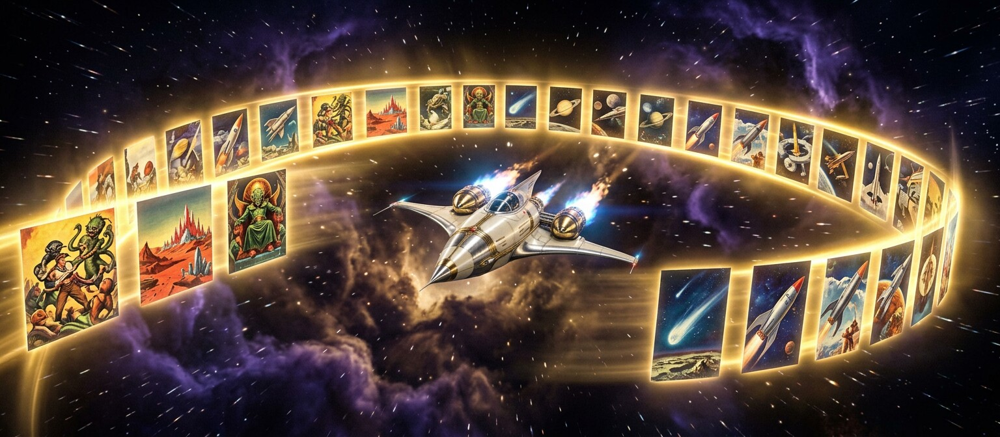

Bibliothèque galactique · 2940 AD
Les 27 Romans
27 aventures · ≈ 1,28 M de mots · 1940-1951
Les pulps originaux de Captain Future sont dans le domaine public aux États-Unis. Chaque aventure est consultable gratuitement — lisez l'histoire telle qu'elle fut publiée par Edmond Hamilton.
Votre progression dans la série
0 lus · 0 en liste · 0% completé
Prochaine lecture recommandée
—
Pour Commencer
Quatre portes d'entrée idéales dans l'univers
La Bibliothèque Complète
27 / 27 aventures affichées
L'Âge des Pulps
Entre 1940 et 1944, Captain Future Magazine parut dix-sept fois — chaque numéro contenant un roman complet d'environ 60 000 mots. Puis, de 1945 à 1951, Startling Stories accueillit dix aventures supplémentaires plus brèves.
Les couvertures de Earle K. Bergey, aux couleurs flamboyantes, définirent l'image du héros pour des générations. Ces magazines étaient vendus dix cents, lus fiévreusement dans toute l'Amérique — et ils sont aujourd'hui scannés, archivés et libres d'accès.
« Dix cents de science-fiction cosmique, un dollar de rêve. »